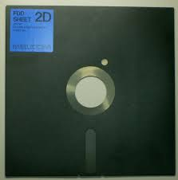
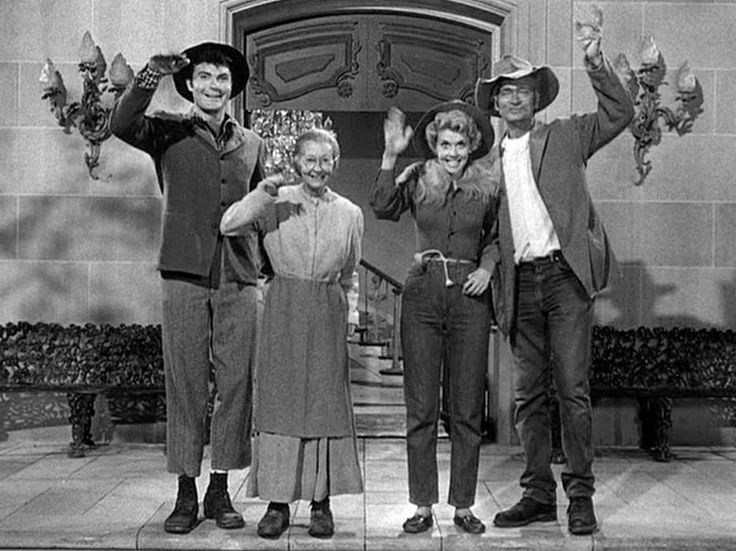

David Wilson
Full stack code janitor working primarily in .NET and JavaScript

ECMAScript?
- ECMA Organization
- ECMAScript-262 & TC39
- JavaScript (Mozilla), JScript (Microsoft), ActionScript (Macromedia)
"ECMAScript was always an unwanted trade name that sounds like a skin disease.” - Brendan Eich
What is ES6?
- Next revision of JS (first in 6 yrs)
- Improvements to keep up with explosion in use
- Fully backwards compatible
- Standard to be ratified this month!
Why should I care about ES6?
- You write any JavaScript
- Tons of new features
- Improves clarity
- Reduces bugs
- Use it now
- It makes you cool
History of ECMAScript
- 1995 - Brendan Eich (Netscape) creates (Mocha -> LiveScript -> JavaScript) in 10 days
- 1996 - 1997 - ECMA-262 Standard (ES1)
- 1998 - ES2 Released
- 1999 - ES3 - baseline for modern JavaScript
- 2003 - ES4 Abandoned due to disagreements
- 2005 - Work on ES4 resumed by Mozilla and Eich
- 2005 - Ajax whitepaper by Jesse James Garrett
- 2007 - ES4 Work abandoned again - leading to ES3.1
- 2009 - ES3.1 renamed to ES5 (Harmony agenda)
- 2015 - ES6 standard to be voted on (June)
Support for ES6
- Transpilers / Shims
- Babel - 76% -> Used for demo
- Traceur - 60%
- TypeScript - 24%
- es6-shim - 20%
- Browsers / Server Runtimes
- IE11 - 15%
- Chrome (w/ options flag) - 43%
- FF - 68%
- Edge - 72%
- Node - 23%
- io.js - 43%
What the heck is transpiling?
- Compiling
Transforming source code written in one language into another.
- Transpiling
Transforming source code written in one language to another at the same level of abstraction. Ex. TypeScript, Babel, Traceur, CoffeeScript
Examples: Nothing up my sleeve
- Standard ES6 transpiled by Babel to ES5
- Setup Babel to transpile:
npm install --global babel
babel --out-file yourfile-compiled.js yourfile.js
Let the magic begin!
Other important features
- Destructuring
- Iterators -> IEnumerable
- Generators -> yield return
- Module Loading
- Promises
- Math
This is great, but can I use it today?
- Transpilers allow production use today
- Examples for popular frameworks
- Integrates into javascript build pipelines
- Shims / Polyfills for missing JS engine features
ES7: Beyond ES6
- More frequent, smaller iterations
- ES7 ratification target 2016
- Async and await
- Typed objects
- Value objects

Yall come back now...
Thank you very much for your time!